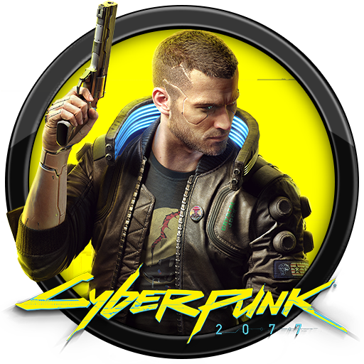

Niet elke game stelt dezelfde eisen aan je computer hardware. Een competitieve shooter vraagt om hoge framerates op een lagere resolutie, terwijl het bij een zware open-world game niet erg is als de framerate wat lager ligt, maar een hoge resolutie en beeldkwaliteit wegen hierin extra toe. Hier ontdek je welke hardware je nodig hebt voor jouw specifieke gamingdoelen.
Game Categorieën Overzicht
Games categorieën
Lichtere Games
E-sports en Licht Grafische Games:
Titel zoals Valorant, Rocket League en League of Legends rekenen voornamelijk op de rekenkracht van je processor. Voor deze games volstaat een voordelige 6-core CPU gecombineerd met een instap videokaart om makkelijk boven de 60, vaak wel 120 frames per seconde te komen op 1080p resolutie.
Lichte games lijst
Middelzware Games
Populaire Multiplayer en Open-World:
Games zoals GTA V, Rust vereisen een goed evenwicht tussen je processor en videokaart. Een middenklasse videokaart met 8 GB tot 12 GB videogeheugen (VRAM) en 16 GB werkgeheugen is hier de standaard om stottervrije prestaties te garanderen op hoge grafische instellingen.
Middelzware games lijst
Zware Games

Zware AAA-titels en Simulaties:
Grafisch intensieve games zoals Cyberpunk 2077, Battlefield 6 of zware simulaties, zoals Microsoft Flight Simulator vragen het uiterste van je pc. Hier zijn 32 GB werkgeheugen, een snelle NVMe SSD en een videokaart met minimaal 12 GB VRAM sterk aangeraden, zeker als je op een resolutie van 1440p of 4K wilt spelen.
Zware games lijst
Game lijsten
Lichte games
Minecraft
Valorant
League of Legends
Counter Strike 2
Dota 2
Overwatch 2
Fortnite
Apex Legends
Team Fortress 2
Brawlhalla
Middelzware spellen
Minecraft (met shaders)
Grand Theft Auto V
GTA Online
Rust
Tom Clancy's: Rainbow Six Siege
Call of Duty series
The Witcher 3: Wild Hunt
Helldivers 2
Palworld
Satisfactory
Zware spellen
Cyberpunk 2077
Battlefield 6
Microsoft Flight Simulator
Alan Wake
Black Myth: Wukong
Red Dead Redemption 2
Starfield
The Last Of Us Part 1
Hogwarts Legacy
resolutieoverzicht
Uitleg resoluties
1080p - Full HD - 1920x1080
Meest voorkomende resolutie, vereist minder GPU-kracht en VRAM (videogeheugen) en daarom makkelijker om hoge verversingssnelheden (144Hz+) te behalen.
1440p - Quad HD - 2560x1440
De huidige gouden standaard voor gaming met scherper beeld en een hele goede prijs-prestatieverhouding. Vereist wat extra videogeheugen en wat meer GPU-kracht, maar is de grootste upgrade tegenover.
2160p - 4K / Ultra HD - 3840x2160
Extreem scherp beeld, maar vereist een zeer dure high-end videokaart. Verschil is het meest te merken op grotere schermen, maar zij met een scherp oog zeggen het verschil te merken.